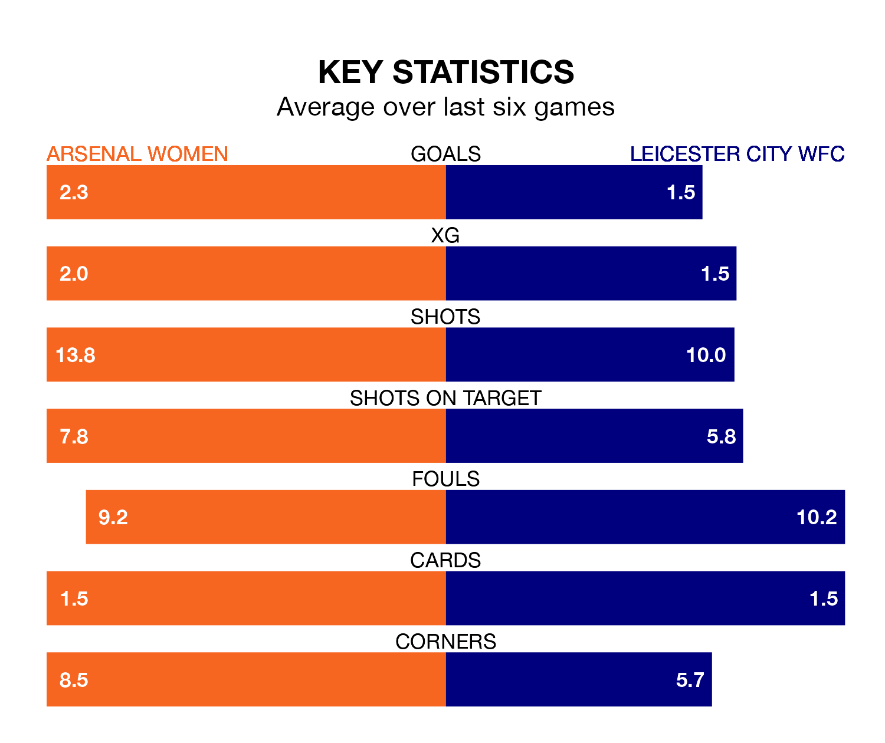

Relegation candidates Leicester City WFC face a challenge away against high-flying Arsenal Women at Meadow Park on Sunday.
Leicester City WFC are ninth in the FA Women's Super League table, and have picked up four wins and five draws in their 18 games to date.
The Gunners, meanwhile, are third in the standings with 40 points, having won 13 and drawn one, and are six points behind table-toppers Chelsea Women.
With 42 goals in 18 games so far this season, Arsenal are the league's third-highest scorers with 2.3 goals per game. And they are conceding fewer than average, letting in 18 goals at a rate of 1.0 per game.
Leicester City WFC, meanwhile, are below average scorers, with 1.4 goals per game, compared to a league average of 1.7. They have conceded 2.0 goals per game.
The Gunners are in reasonable form in the FA Women's Super League, with four wins and two losses from their last six games.
With a win and a draw over that period, the visitors' form is much worse – they have taken four points from 18, compared to the home team's 12.
In Manuela Zinsberger, Arsenal can rely on one of the league's safest pair of hands. She has kept four clean sheets in her 15 appearances this season in the FA Women's Super League.
In Leicester City WFC's net, Janina Leitzig has one clean sheet in 11 games. She has conceded a goal every 50 minutes, 80% more often than the 90 minutes between goals for Zinsberger.
In the last five years, Arsenal and Leicester City WFC have played each other on five occasions. Arsenal won all of them.
On average, the Gunners scored 4.0 goals and Leicester City WFC 0.4 in those matches.
Their last meeting was on November 12, when Arsenal won 6-2 away.
Arsenal's last match was on Sunday, a 5-0 win against Bristol City Women, with Alessia Russo (two), Bethany Mead (two) and Ella Powell (own goal) getting the goals for the Gunners.
Leicester City WFC drew 2-2 with Aston Villa Women last time out, on March 30, with Samantha Tierney and Yuka Momiki on the scoresheet.
Updated: 15:40 (UTC), 18/04/24